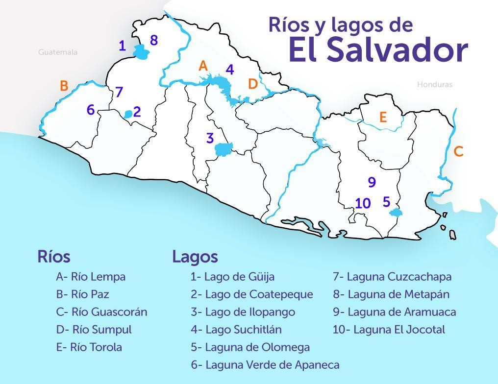

los Rios
Los ríos forman parte de los atractivos turísticos naturales de El Salvador, en ellos puede disfrutarse del paisaje que ofrecen los recursos naturales que tenemos.
Los ríos más caudalosos suelen usarse para generar energía, potabilizar agua para el consumo de la población, realizar pesca o deportes acuáticos, así como también bañarse.
Los ríos son también parte de la cultura de El Salvador, en ellos se cuentan muchas leyendas populares, como por ejemplo la leyenda de La Siguanaba o la Leyenda del Cipitío. Ambos personajes de la mitología salvadoreña que comparten una historia en común menciona que la Sihuanaba era una mujer hermosa que abandonó a su hijo, el Cipitío. Y como castigo fue obligada a andar de manera errante lavando en los ríos. El Cipitío por su parte es un niño eterno que tira flores a las muchachas que llegan a los ríos para robar su corazón.
En esta sección conoceremos los ríos más importantes de El Salvador, y principalmente aquellos donde los turistas en El Salvador deciden bañarse en sus frescas aguas para pasar un día de mucha tranquilidad.
te dejamos unos enlaces de la plataforma de Youtube para que puedas tener una mejor idea de como es cada lugar